Project Overview
This SQL project analyzes global COVID-19 data to reveal trends in infections, fatalities, and vaccination progress. Using advanced SQL techniques, I transformed raw pandemic data into actionable insights about country-level risks and global patterns.
The analysis enables:
- Comparison of fatality rates across countries
- Tracking of vaccination progress relative to population
- Identification of high-risk regions
- Preparation of clean datasets for visualization
Key Analyses Performed
-
Fatality Rates
Calculated total deaths vs. total cases to identify country-level mortality risks.
-
Infection Rates
Measured what percentage of each country's population was affected.
-
Geographic Impact
Ranked countries and continents by absolute death counts and per-capita rates.
-
Vaccination Progress
Used rolling sums to track vaccination coverage relative to population size.
Technical Implementation
The project utilized:
- Common Table Expressions (CTEs) for complex queries
- Window functions for rolling calculations
- Multiple joins across related tables
- Temporary tables for intermediate results
- Views to prepare data for Power BI visualization
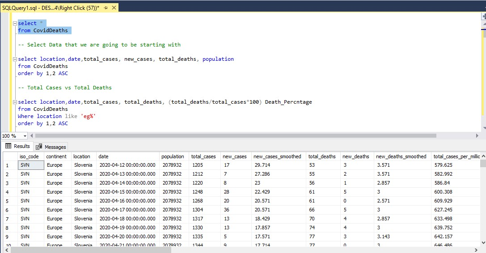
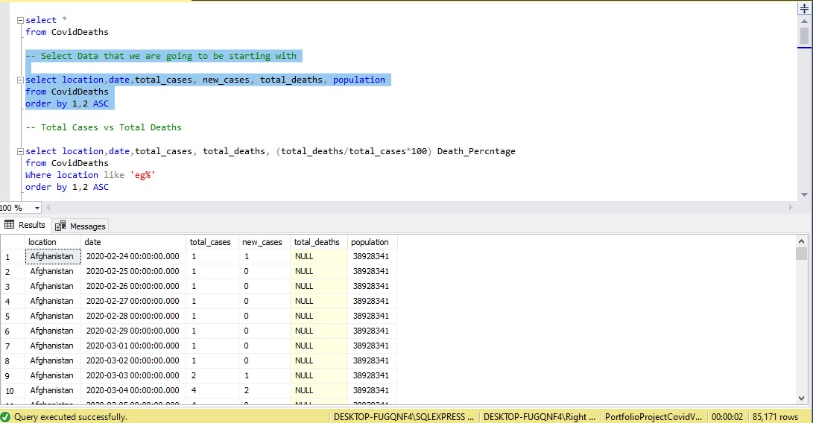
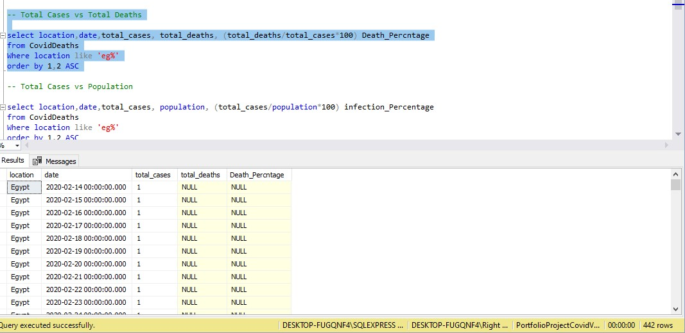
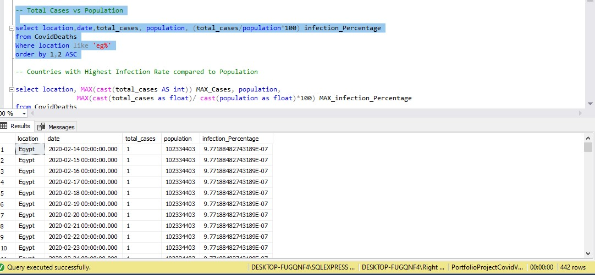
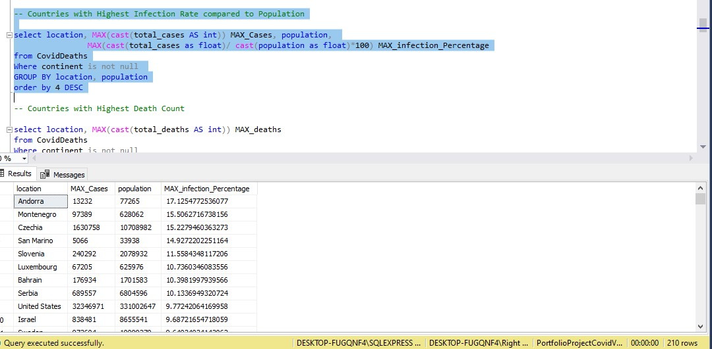
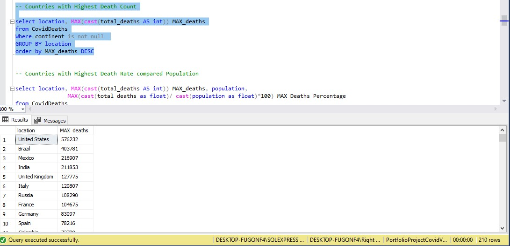
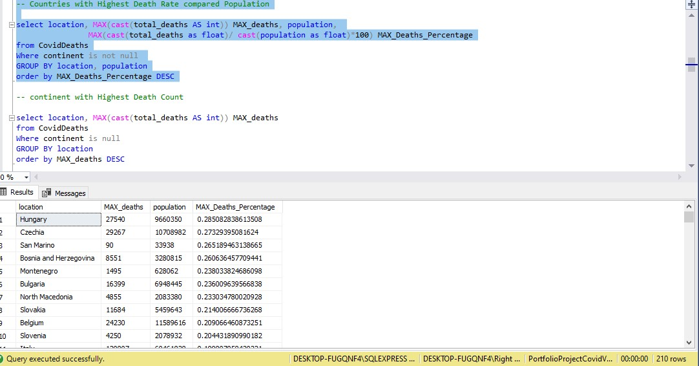
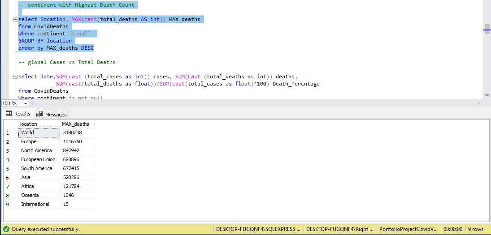
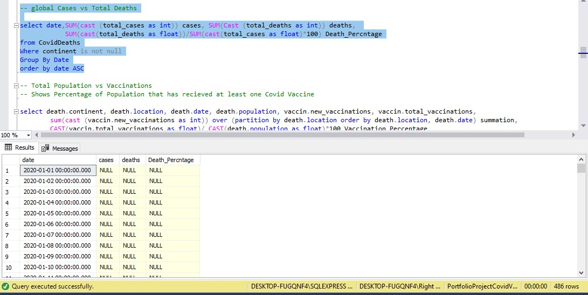
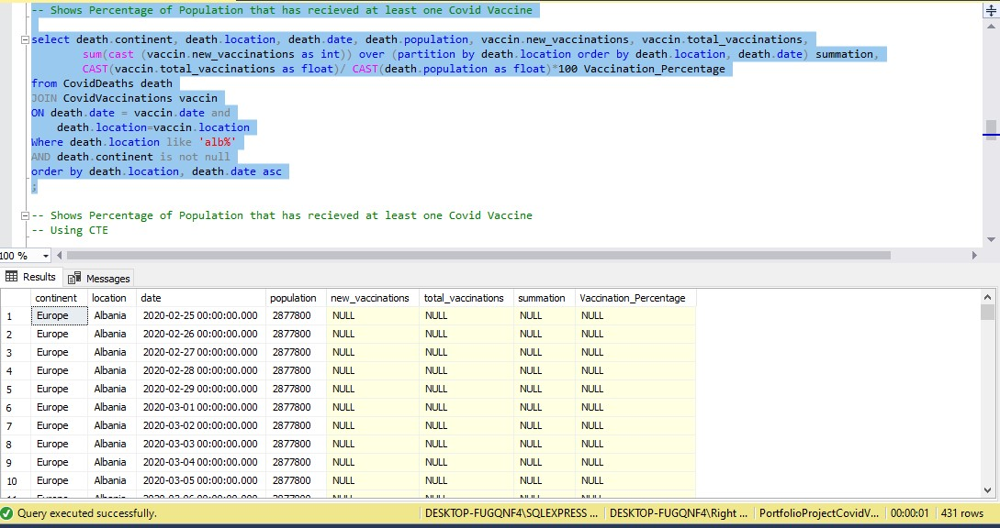
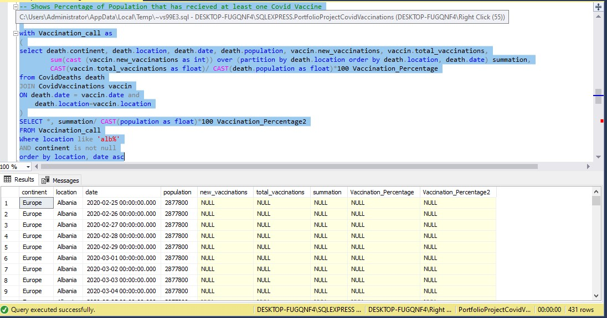